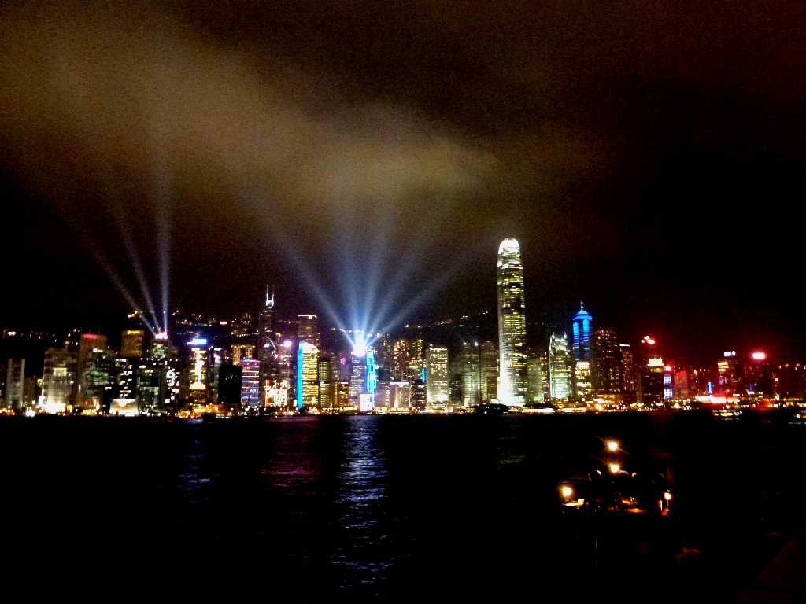
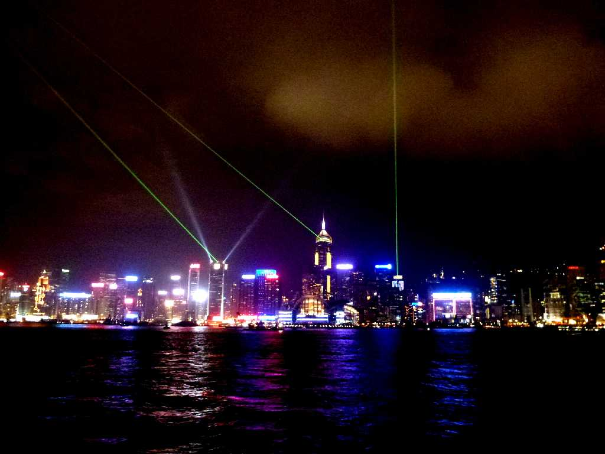
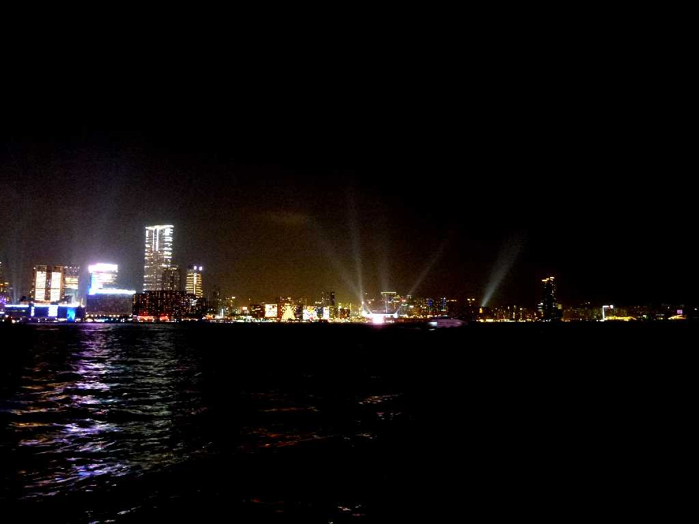
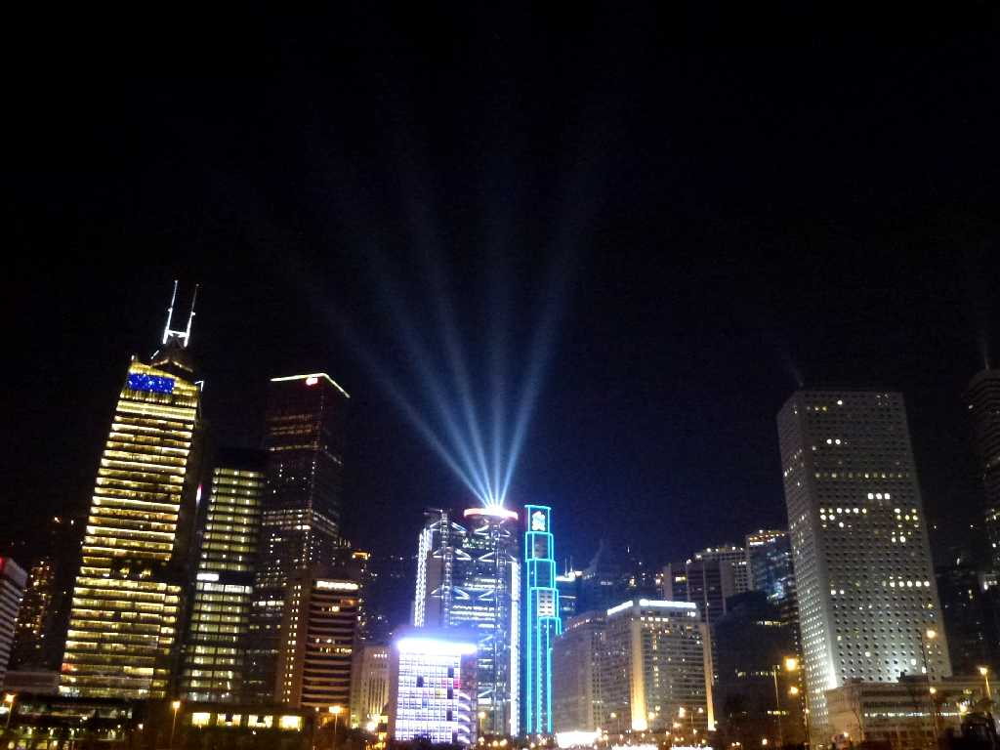

Symphony of Lights Central Hong Kong Island from Kowloon Hong Kong 香港
香港観光のイベントとして毎日２０時から行われるシンフォニーオブライツは世界最大規模の光のショーと云われている

Symphony of Lights Wan Chai Hong Kong Island from Kowloon

Symphony of Lights Tsim Sha Tsui Ｋｏｗｌｏｏn from Hong Kong Island
Symphony of Lights Ｋｏｗｌｏｏn on Dinner Cruise Ship

Symphony of Lights Central from Hong Kong Ferry Pier